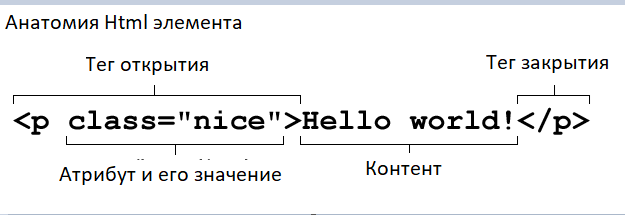
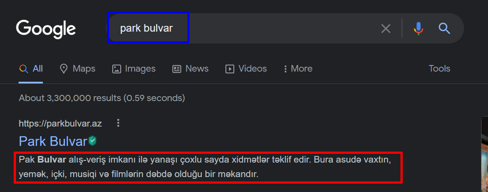
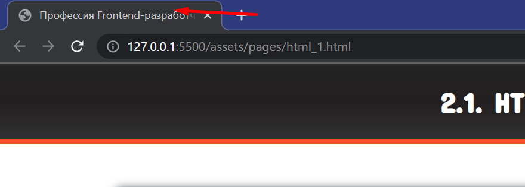
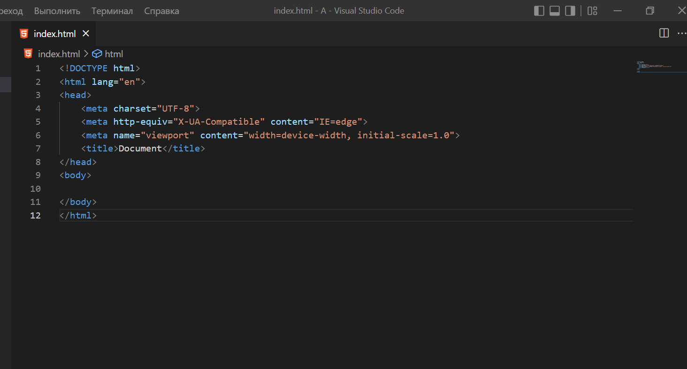
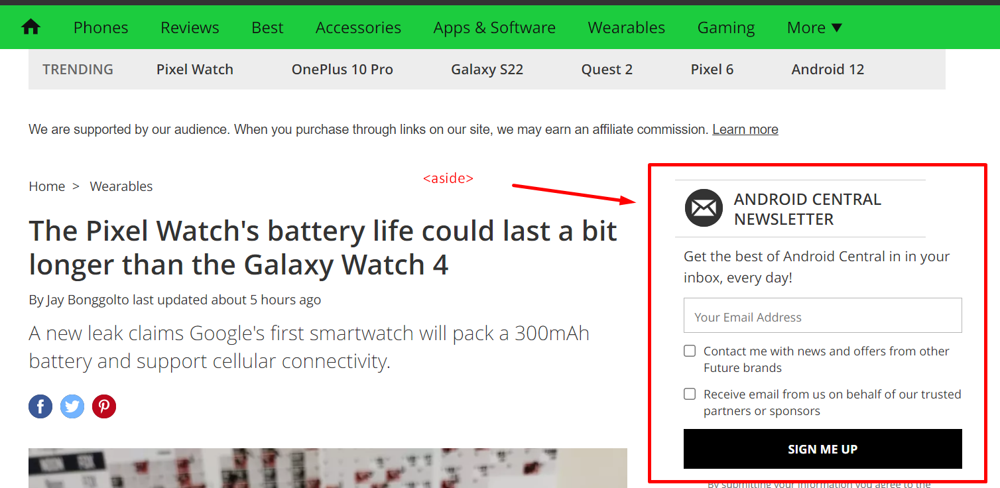

HTML (от англ. HyperText Markup Language — «язык гипертекстовой разметки») — язык разметки, определяющий структуру веб-страниц.
Концепция и синтаксис
Документ HTML - это простой текст, поделённый на элементы. Элементы окружены одинаковыми открывающимися и закрывающимися тегами. Каждый тег начинается и заканчивается с угловых скобок (< >). Также есть теги, которые созданы не для добавления текста, например <img>.
Вы можете дополнить HTML теги с помощью атрибутов, которые дают дополнительную информацию и затрагивают то, как браузер интерпретирует элемент:

HTML принято сохранять с расширением .htm или .html (в основном рекомендуется так) Каждый HTML-документ начинается с декларации типа документа, или «доктайпа». Тип документа необходим, чтобы браузер мог определить версию HTML и правильно отобразить страницу.
HTML-атрибуты это специальные слова, которые управляют поведением HTML-элемента. Они добавляют дополнительную функциональность, либо меняют поведение элемента по умолчанию. Атрибуты элемента выражаются внутри начального тега элемента.
Для старой версии HTML доктайп выглядел так:
<!DOCTYPE HTML PUBLIC "-//W3C//DTD HTML 4.01//EN" "http://www.w3.org/TR/html4/strict.dtd">
А для современной версии HTML уже намного проще:
<!DOCTYPE html>
Простейшая HTML-страница состоит как минимум из трёх тегов: <html>, <head> и <body>.
Тег <html> располагается в документе сразу после доктайпа и содержит все остальные теги, включая <head> и <body>. Тегу <html> обычно добавляют важный атрибут lang (сокращение от английского «language»), в котором задаётся язык документа. Наш сайт будет русскоязычным, поэтому в lang пропишем такое значение:
<html lang="ru">
Тег <head> хранит важную служебную информацию, а в теге <body> хранится содержание страницы, которое отображается в окне браузера. Все тексты и картинки мы будем добавлять внутрь <body>. В документе теги head и body могут быть использованы только один раз.
Для зануд! =) Атрибут lang можно задавать любым тегам, если нужно уточнить, на каком языке написан текст внутри тега. Но если задать его тегу <html>, то действие атрибута распространится на весь документ целиком.
Тег head , служебная информация о странице
Тег <head> предназначен для хранения служебной информации о странице. Он располагается первым в теге <html> , сразу перед <body> . Внутри <head> обычно содержится заголовок, ключевые слова, описание страницы и другие служебные данные. Также внутри него подключаются внешние ресурсы, например, стили. Содержимое этого тега не отображается на странице напрямую.
С помощью тега <link> подключаем к документу разные CSS-файлы:
<head>
<link href="адрес_файла_стилей.css" rel="stylesheet">
</head>
У <link> в атрибуте href задаётся адрес стилевого файла, а атрибут rel со значением stylesheet говорит браузеру, что мы подключаем именно стили, а не что-то другое.
Тег meta , метаинформация
Важный тег, который включается в <head> — тег <meta>. Он одиночный, то есть не требует парного закрывающего тега в конце.
С помощью <meta> можно сообщать браузеру, поисковому роботу или другому устройству различную служебную информацию (или метаинформацию) о вашем сайте: кодировку текста, описание контента и так далее. Для этого используются теги <meta> с разными атрибутами и их значениями. Вот некоторые из атрибутов: charset, content, http-equiv, name и scheme.
С помощью атрибута charset указывается кодировка текста HTML-страницы:
<meta charset="название кодировки">
Лучше всегда указывать кодировку явно. Если этого не делать, браузер может неправильно угадать её, и вместо текста будут отображаться «иероглифы».
Самая распространённая современная кодировка — utf-8. Используйте её во всех своих проектах. Раньше часто использовали кодировку windows-1251, стандартную кодировку для кириллицы в Windows. Но сейчас это считается плохой практикой.
Для зануд! =) <meta>, <link>, <title> и другие теги, включаемые в <head>, имеют особый тип содержимого — метасодержимое. Они не отображаются на странице напрямую, а служат для хранения информации о документе и для взаимосвязи документа с другими документами и системами.
С помощью метатегов можно добавить на страницу информацию полезную для поисковых систем: перечень ключевых слов и краткое описание страницы.
Перечень ключевых слов задаётся тегом <meta>, у которого атрибут name имеет значение keywords. Ключевые слова (самые важные слова из содержания страницы) перечисляются в атрибуте content через запятую:
<meta name="keywords" content="важные, ключевые, слова">
Раньше этот тег был очень важен для поисковиков. Каково положение дел сейчас – секрет Яндекса и Гугла.
Краткое описание страницы задаётся похожим образом, только значение атрибута name меняется на description:
<meta name="description" content="краткое описание">
Краткое описание (или аннотация) страницы часто используется поисковиками при отображении результатов поиска.

Синим указаны ключевые слова, а красным краткое описание.
Дополнительно о мета тегах можете прочитать по ссылкам ниже.
- https://developer.mozilla.org/ru/docs/Web/HTML/Element/meta
- https://www.w3schools.com/tags/tag_meta.asp
Для зануд! =) Существуют рекомендации по правильному использованию метатегов от Гугла и Яндекса.
Тег title , заголовок страницы
Ещё один элемент, который располагается в <head> — это тег <title> . В нём задаётся заголовок страницы, который отображается во вкладках браузера:

А вот пример использования <title> в коде:
<head>
<title> Профессия Frontend-разработчик - 2.1. HTML (Начало) </title>
</head>
Текст в <title> должен описывать содержимое документа в целом. По заголовку должно быть понятно, о чём эта страница, даже когда она не открыта в браузере, а отображается в результатах поиска или в браузерных закладках.
Основные теги в VS Code.
Если вы просмотрели дополнительные уроки по VS Code , то наверное уже это знаете, ну а для ленивых я повторю.
Структуру html писать каждый раз не нужно. Просто надо написать ! и нажать кнопку tab .
Результат будет такой.

А дальше меняем нужные нам параметры (язык, название документа и т.д.).
Задание 1.
Что значат другие мета теги, которые выходят, когда вы нажимаете на tab? Найдите ответ по ссылкам выше и напишите в комментариях.
Не забывайте сохранять документ, после того как пишите код. Сохранить документ вы можете с помощью комбинаций клавиши ctrl + s.
Тег main, основное содержание
Давайте переключимся со служебной информации на содержание. Все эти теги будем писать внутри тега <body>. Сейчас мы проектируем структуру страниц на уровне крупных блоков (введение, основное содержание, заключение и так далее) и для этого нам нужны подходящие теги.
И первый такой тег — это тег <main> . Он выделяет основное содержание страницы, которое не повторяется на других страницах. И обычно на странице используется <main> .
<main>
Привет, я основной контент! Живу только на этой странице.
</main>
Наш сайт будет состоять из нескольких страниц. На каждой из них будут повторяющиеся шапка и подвал, а также уникальный контент страницы. Вот его и заключим в тег <main>.
Допустим на главной странице, которую мы сейчас верстаем, есть приветственный текст. Он является её основным контентом и на других страницах его не будет. А значит весь этот текст нужно заключить в тег <main> . На внутренних страницах в <main> будет уже другое основное содержимое.
Для зануд! =) Спецификация не допускает использование на одной странице более одного тега <main>, если у них нет специального атрибута hidden. Этот атрибут добавляется HTML-элементу, например, в одностраничных приложениях (Single Page Application), чтобы менять содержимое страницы, делая видимым тот или иной <main> в разных состояниях приложения. Атрибут hidden указывает браузеру, что элемент не должен отображаться и использоваться в момент, когда отображается и используется содержимое другого <main>.
Теги header и footer, шапка и подвал
Кроме уникального основного содержимого страницы, у нас есть повторяющиеся на других страницах вводная часть и заключительная часть.
Вводную часть страницы, которую чаще называют «шапкой», описывает тег <header>. Аналогично ему, заключительную часть страницы, или «подвал», описывает тег <footer>.
<header>
Я шапка сайта. Могу повторяться на других страницах.
</header>
<main>
Я основной контент! Живу только на этой странице.
</main>
<footer>
Я подвал сайта, я как шапка.
</footer>
Обычно на странице появляется по одному тегу <header> и <footer> , но их может быть и больше.
Для зануд =) Тег <header> — это не только шапка сайта с логотипом и меню, он может использоваться, например, и как «шапка» какой-нибудь статьи или раздела сайта. Конечно, в случае со статьёй <header> называют не «шапкой», а вводной частью, в которой могут содержаться заголовки, оглавление и так далее.
С <footer> ситуация аналогичная. В привычном понимании это подвал сайта, с копирайтами, контактной информацией и так далее. Но <footer> может использоваться и в других разделах сайта. Например, внутри статьи «подвале» можно разместить дополнительную информацию: данные об авторе, дополнительные ссылки и так далее.
Тег section, смысловой раздел
Было бы хорошо добавить на главную страницу что-то помимо приветствия, не правда ли? Давайте вставим в прототип ещё один раздел — про ваши навыки, пока с текстом-заглушкой. Теперь в основном содержании, то есть в теге <main> , появились два смысловых раздела: «Приветствие» и «Навыки». Их нужно как-то друг от друга отделить.
В этом нам поможет специальный тег <section> , который обозначает крупный смысловой (или «логический») раздел. Как понять, что раздел смысловой? Если вы можете дать ему имя, описывающее его содержание или назначение, то это точно он. Например:
<section>
Раздел «О компании» Хм, наверное в нём будет описание компании
</section>
<section>
Раздел «Редактирование профиля» Ага, здесь я управляю личными данными
</section>
Хороший пример использования <section> — разделение книги на главы, ведь название главы описывает её содержание. Также одна глава, без остальных, воспринимается вырванной из контекста. То же самое с контентом главной страницы. Смысловые разделы составляют содержание страницы, но сами по себе, в отрыве от страницы, эти «секции» жить не могут и теряют смысл.
Для зануд =) Небольшая подсказка как отличать смысловые или логические разделы от структурных разделов. Логический раздел вы можете осмысленно назвать одним словом или словосочетанием: «программа обучения», «каталог», «наши преимущества». Если же в голову приходят названия, которые указывают на его положение на странице («шапка», «подвал», «левая колонка»), либо перечисления («новости и галерея», «фильтры и товары»), в таком случае раздел структурный и тег <section> для него не подходит.
Тег nav, основная навигация
Допустим мы разрабатываем сайт, на котором будет главная страница и записи блога. Поэтому нам нужно предусмотреть на главной странице навигационный блок, с которого можно будет перейти на определённые записи.
Для создания логического раздела с основной навигацией предназначен тег <nav> (сокращение от английского «navigation» ). Обычно в <nav> включают ссылки на другие страницы или навигацию по текущей странице. Если навигация повторяется, то лучше поместить его в тег <header> . Пример:
<nav>
Первый пост, второй пост, архив постов
</nav>
Для зануд =) Не каждая группа ссылок на странице должна быть обёрнута в <nav> . Например, небольшой блок со вспомогательными ссылками в подвале сайта. Такой блок внутри тега <footer> не нужно дополнительно оборачивать в тег <nav> . Кроме того, блок <nav> помимо ссылок может включать абзацы с текстом, заголовки, списки и другое содержание.
Тег article, независимый раздел
Отлично, с крупными блоками главной страницы разобрались. Можем переходить к внутренней странице с записью блога. На ней будут располагаться уже привычные шапка, основное содержание и подвал.
В блогах обычно бывает несколько постов. Поэтому их нам тоже нужно выделить каким-то тегом. Может для этого подойдёт уже знакомый нам тег <section> ? Да, подойдёт, но есть кое-что получше!
И это тег <article> , который обозначает цельный, законченный и самостоятельный фрагмент информации. А пост в блоге именно такой.
Тег <article> , в отличие от <section> , можно вырвать из одного места и вставить в другое (на другую страницу сайта или на другой сайт), и смысл содержимого тега при этом не потеряется. Примеры: статья, пост в блоге, сообщение на форуме и так далее.
<article>
Я фотка в Инстаграме, смотрюсь отлично где угодно
</article>
Для зануд =) Теги <section> можно использовать внутри <article> , если там нужно выделить отдельные смысловые блоки. Точно так же можно использовать <article> внутри <section> , если в логическом разделе документа содержатся независимые контентные блоки.
Тег aside, дополнительное содержание
Помимо <section> и <article> есть ещё один крупный логический контейнер. Это тег <aside> .
Тег <aside> включает в себя дополнительное содержание, не связанное напрямую с основным. Такие блоки ещё часто называют «сайдбарами» или боковыми панелями.

Теги h1-h6, заголовки в HTML
Мы закончили прототипировать крупные блоки страниц. Теперь давайте вернёмся к главной странице и немного поработаем над структурой текстового содержания.
Для создания основной структуры текста используют заголовки. В HTML существует целое семейство заголовочных тегов: от <h1> до <h6> . Тег <h1> обозначает самый важный заголовок (заголовок верхнего уровня), а тег <h6> обозначает подзаголовок самого нижнего уровня. Буква «h» в названии тега — это первая буква английского «heading».
На практике в текстах редко встречаются подзаголовки ниже третьего уровня. Поэтому чаще всего используются теги <h1> , <h2> и <h3> :
<h1>Спецификация HTML</h1>
<h2>Раздел 1 Введение</h2>
<h3>Раздел 1.1 Происхождение языка</h3>
Поисковые системы придают особое значение заголовкам, также правильно расставленные заголовки важны для доступности документа. Поэтому нужно учиться грамотно использовать заголовки.
Заголовок <h1> — самый важный на странице. В него нужно включать текст, который в целом описывает содержание страницы. Очень важно, чтобы заголовок первого уровня на странице был только один.
На главных страницах заголовок верхнего уровня часто добавляют в шапку сайта.
На главной странице заголовок <h1> мы включили в шапку сайта, это типовое решение для главных в блогах. На внутренних страницах заголовок первого уровня чаще всего находится в основном контенте, то есть внутри тега <main>.
Для зануд =) В пятой версии HTML разрешили использовать собственную, независимую от остального документа, иерархию заголовков в тегах для создания смысловых разделов. Теперь на странице можно использовать несколько <section> или <article> со своими <h1>, <h2> и <h3> . На практике выяснилось, что этот механизм скорее мешает, чем помогает, а браузеры и средства доступности не спешат его реализовывать. Так что все начали возвращаться к старой доброй сквозной иерархии заголовков во всём документе.
Тег p, параграф
Основную структуру текста создают с помощью заголовков, а более мелкую выстраивают с помощью параграфов (или абзацев). Для разметки параграфов предназначен тег <p> (от английского «paragraph»).
По умолчанию абзацы начинаются с новой строки и отделяются от остального контента отступами сверху и снизу. Так что, если нужно отделить один блок текста от другого, верным решением будет заключить их в теги <p> .
Абзац — отрезок письменной речи, состоящий из одного или нескольких предложений, зачастую объединённых общей мыслью. Это привычное нам определение. Параграф в HTML совсем другой. Параграфы в HTML — это всего лишь неразрывная последовательность фразовых элементов, то есть чисто структурная, а не смысловая сущность. Параграфы существуют даже без тега <p>. А тег <p> позволяет лишь явно выделять параграфы, группируя элементы с фразовым типом содержимого. И это могут быть не только блоки текста, а, например, изображения, ссылки или поля ввода. Не все теги могут быть включены в <p>. Например, внутри абзаца не могут располагаться крупные структурные теги, заголовки, формы, списки, таблицы. Когда браузер встречает неподходящий тег внутри <p>, он «выбрасывает» этот тег из <p>.